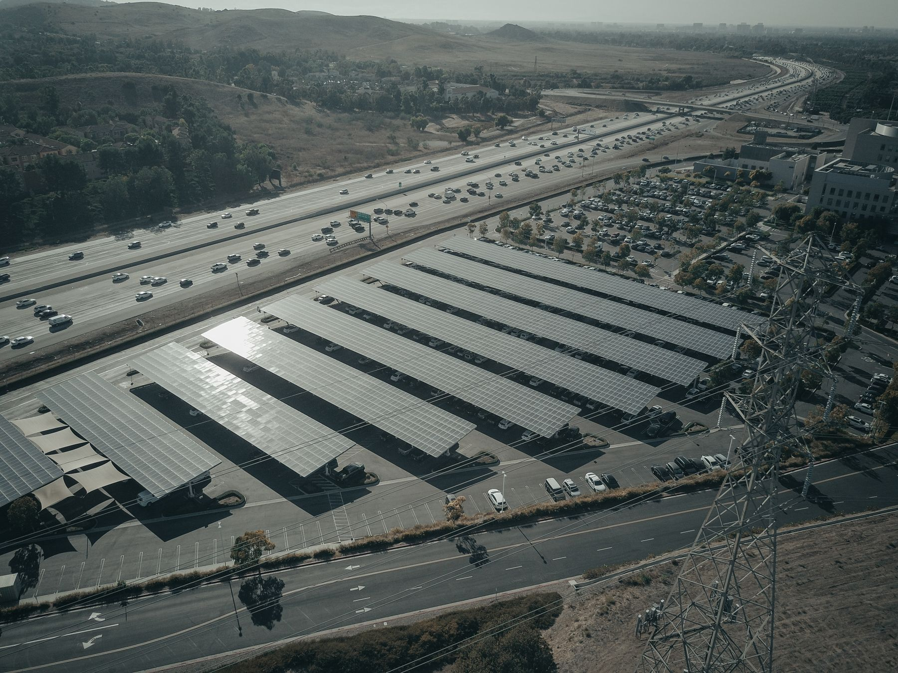

Der polnische Übertragungsnetzbetreiber Polskie Sieci Elektroenergetyczne veröffentlichte am 21. Juli 2026 eine Mitteilung zum Entschädigungsanspruch bei nicht marktbasierter Abregelung von Photovoltaikanlagen am 14., 16., 18. und 19. Juli. Das ist eine wichtige Information für Betreiber, deren Anlagen von Anweisungen des Netzbetreibers betroffen waren. Sie bedeutet jedoch keine automatische Zahlung an jeden Eigentümer von Solarmodulen.

Was bedeutet die Abregelung einer EE-Anlage?
Bei einer Abregelung wird der geplante Betrieb einer Energieerzeugungsanlage auf Anweisung des Netzbetreibers verändert. In der Praxis kann dies eine zeitweise Reduzierung der Erzeugung bedeuten, wenn dies für die sichere Ausregelung des Stromsystems erforderlich ist. Es handelt sich um ein Instrument des Netzbetriebs – nicht um die gewöhnliche Entscheidung eines Anlagenbetreibers, den Wechselrichter auszuschalten.
Die PSE-Mitteilung bezog sich auf eine nicht marktbasierte Abregelung. Der Netzbetreiber nannte konkrete Tage und verwies auf einen Entschädigungsanspruch für Anlagen, die nach den einschlägigen Regeln von der Maßnahme betroffen waren.
Die Tatsache, dass die EE-Erzeugung an einem bestimmten Tag begrenzt wurde, beweist noch nicht, dass jede private Prosumer-Anlage Anspruch auf eine Zahlung hat.
Wer sollte einen möglichen Entschädigungsanspruch prüfen?
In erster Linie der Betreiber, der eine Anweisung zur Leistungsreduzierung erhielt oder ausführte und über Daten zum Umfang der Abregelung verfügt. Kommunikation mit dem Netzbetreiber, Messdaten sowie Angaben zur Verfügbarkeit und geplanten Erzeugung der Anlage sollten aufbewahrt werden.
Wird die Anlage über einen Aggregator, Stromhändler oder einen anderen abrechnungsverantwortlichen Akteur betrieben, kann das Vorgehen auch aus dem jeweiligen Vertrag hervorgehen. Eigentümer einer gewöhnlichen kleinen Hausanlage sollten nicht davon ausgehen, dass die PSE-Mitteilung automatisch eine Zahlung auslöst. Zunächst ist zu klären, ob die Anlage formell von der Abregelung erfasst war und welches Verfahren gilt.
Was bedeutet die Situation für die Planung neuer Anlagen?
Mit der wachsenden Zahl von Solarstromanlagen wird die flexible Nutzung der Energie vor Ort wichtiger. Das bedeutet nicht, dass ein Batteriespeicher in jedem Haus „das Netzproblem löst“. Ein gut ausgelegtes System kann jedoch einen Teil des Verbrauchs in die Erzeugungsstunden verschieben oder einen Teil des Überschusses speichern.
- Legen Sie die PV-Leistung passend zum tatsächlichen und geplanten Verbrauch aus.
- Prüfen Sie, wann Wohnhaus oder Unternehmen den meisten Strom benötigt.
- Analysieren Sie vor dem Speicherkauf stündliche Daten und nicht nur die jährliche kWh-Summe.
- Stützen Sie die Investitionsentscheidung nicht auf die Annahme regelmäßiger Entschädigungszahlungen.
Was ist zu tun, wenn Ihre Anlage abgeregelt wurde?
Prüfen Sie die genaue Mitteilung des Netzbetreibers, bewahren Sie Unterlagen auf und wenden Sie sich an die Stelle, die die Anweisung übermittelt hat oder für die Abrechnung der Anlage zuständig ist. Bei finanziellen und rechtlichen Fragen entscheiden die Umstände des Einzelfalls – dieser Artikel dient nur der Information.
Quelle
Informationsstand: 27. Juli 2026. Der Artikel ist keine Rechtsberatung und garantiert keine Entschädigung.